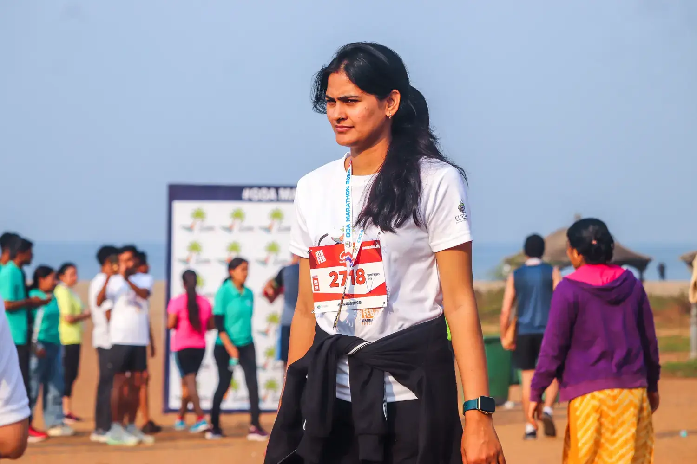
Run for Hope, Homes, and Happiness.
Goa Marathon brings thousands of runners to the streets of Panjim every year, for children in Goa.
A race with a reason.
Goa Marathon is organised in support of El Shaddai Charitable Trust, which gives children in Goa safe homes, education and hope. Every runner who lines up at Campal is part of that work.
Over 13 editions, more than 10,000 runners have taken part, from first-timers in the 5K Dream Run to experienced runners chasing a personal best over 42.2 km.

Hope, homes and happiness.
What every entry helps to make possible.
Hope
A future to run towards, through education and care for children who need it most.
Homes
Safe, loving homes for children in Goa through El Shaddai Charitable Trust.
Happiness
A race morning that brings runners, families and the whole city together.

Every kilometre is for them.
Goa Marathon is organised in support of El Shaddai Charitable Trust, which gives children in Goa safe homes, education and a future to run towards. Your entry is part of that work.
The finish line feeling.
Every medal at Goa Marathon has a story. These are some of the runners who earned theirs.
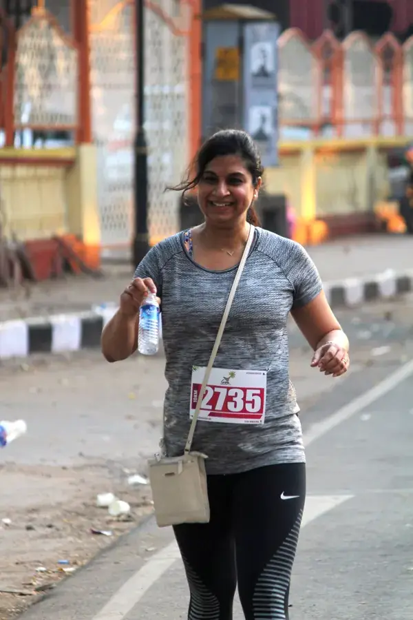
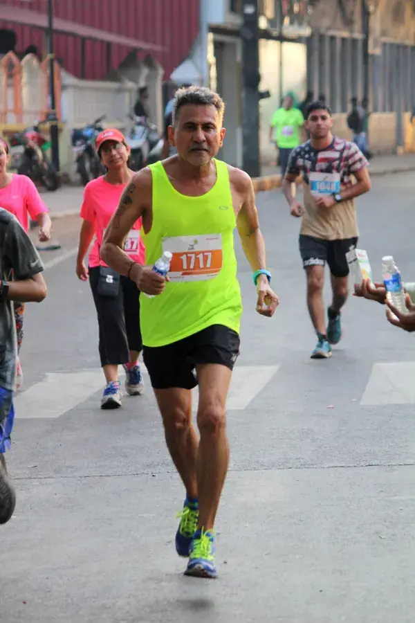
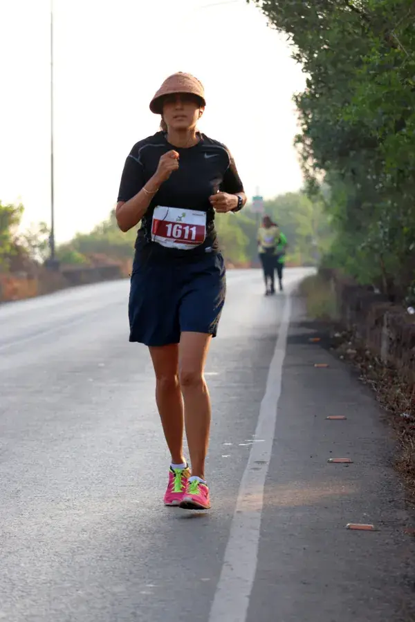
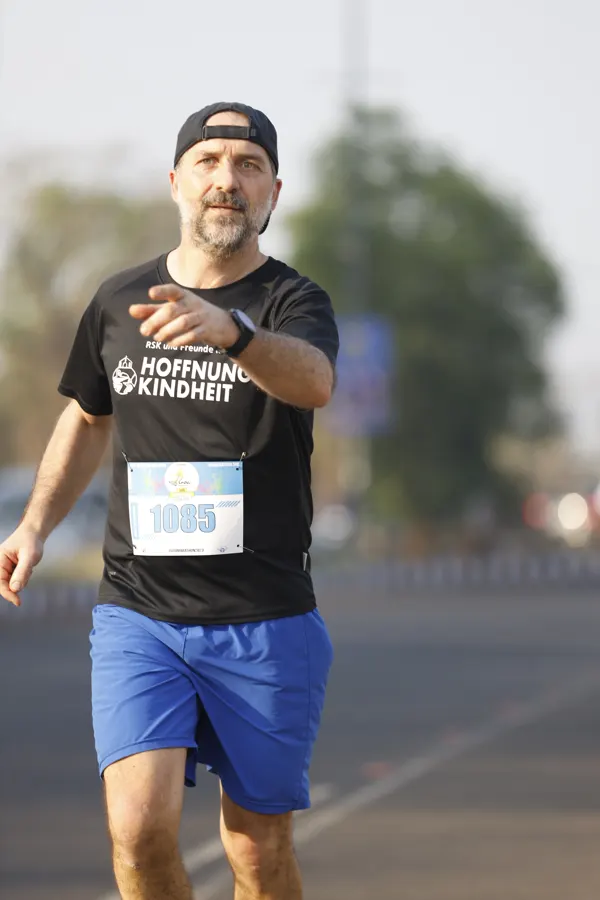
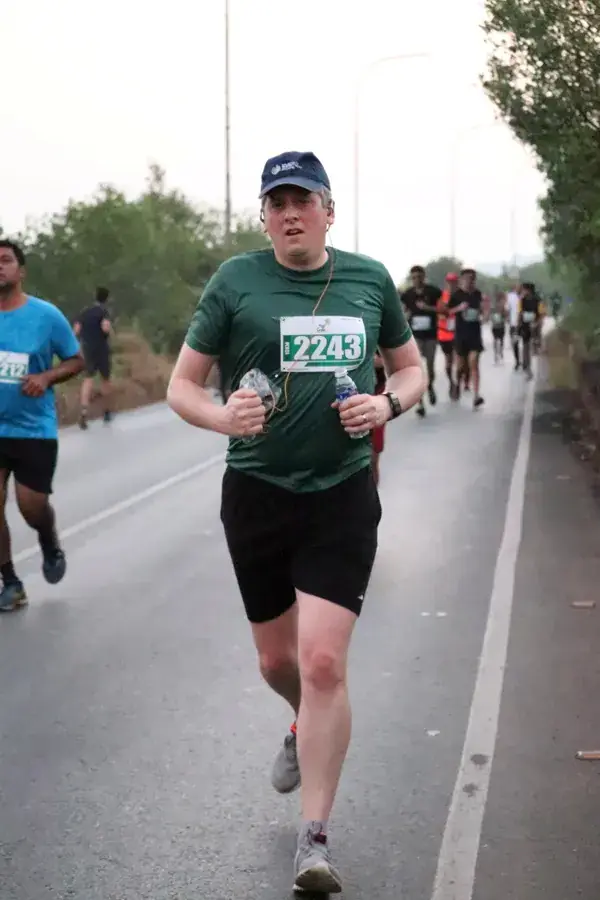
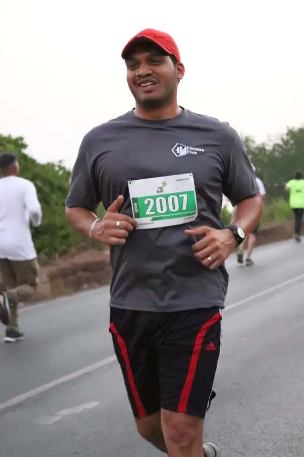
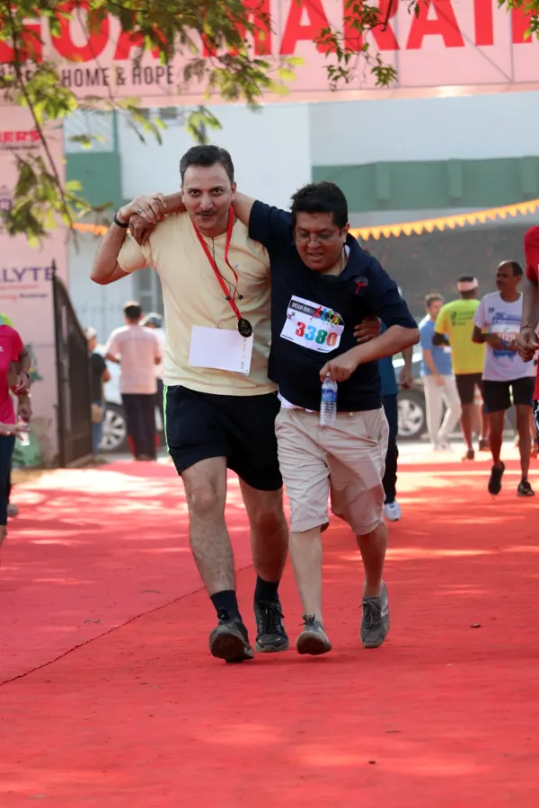
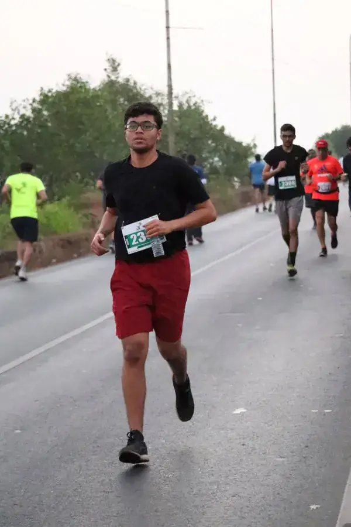


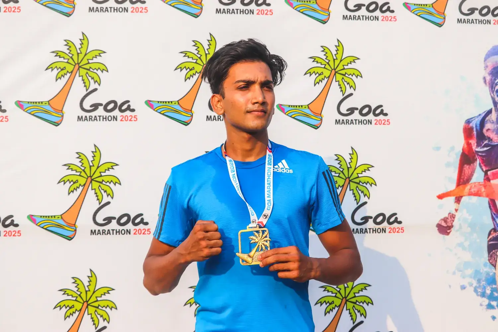


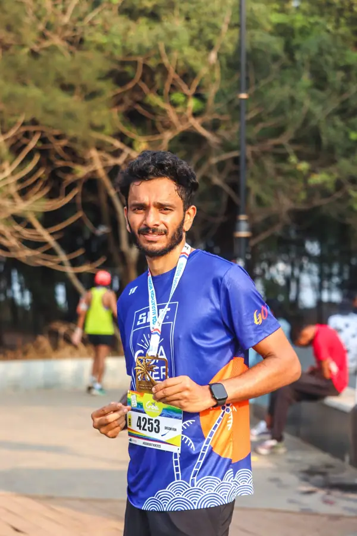


Thirteen editions on Goa’s streets.
More than 10,000 runners have taken on Goa Marathon. Race mornings, finish lines and medals from past editions.
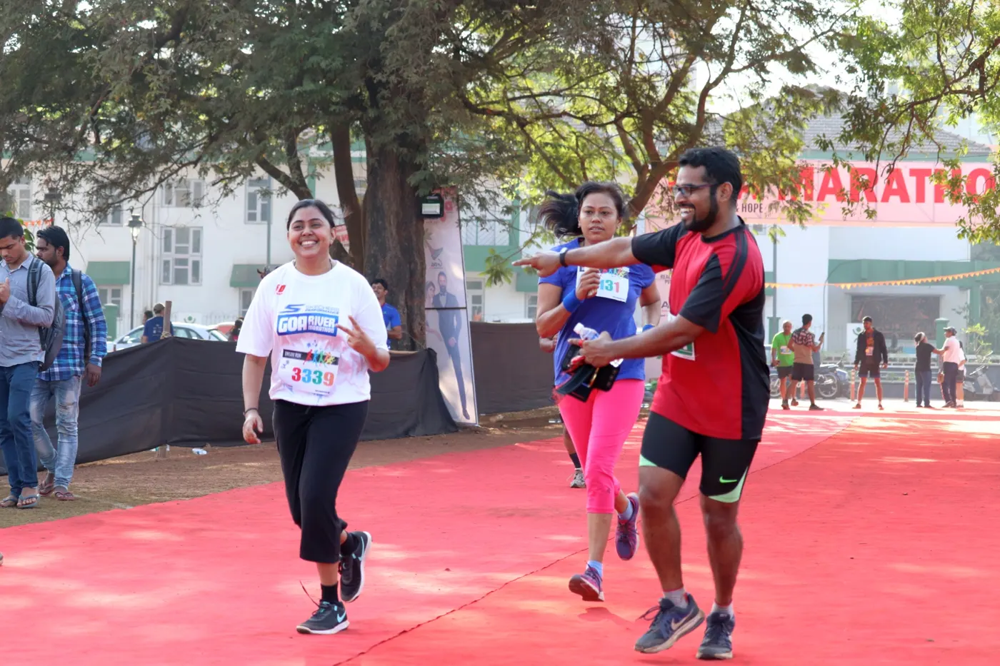
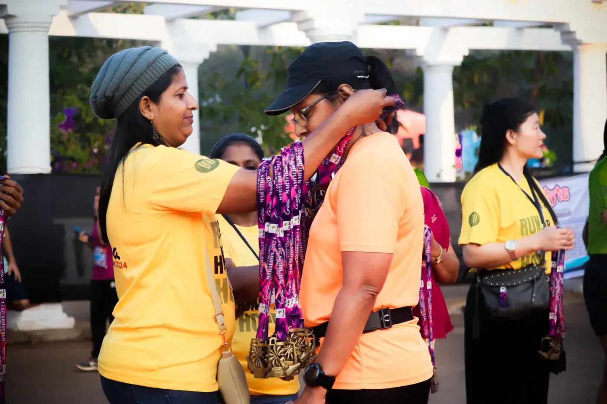